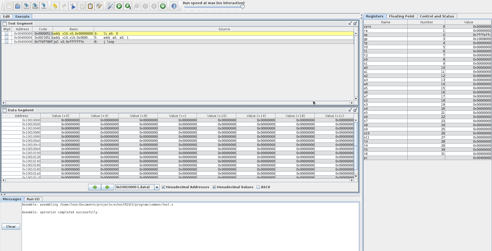
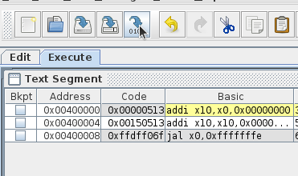
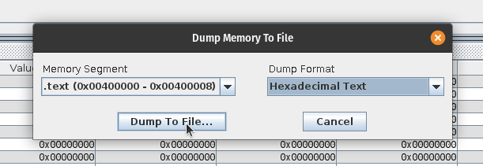
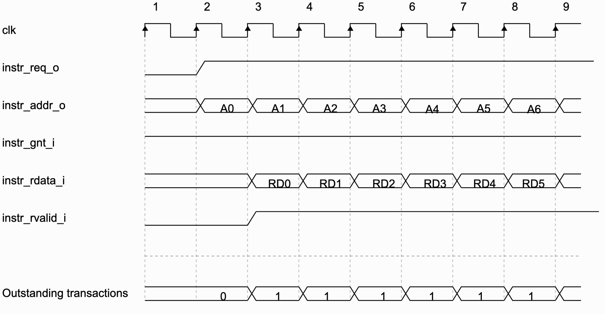
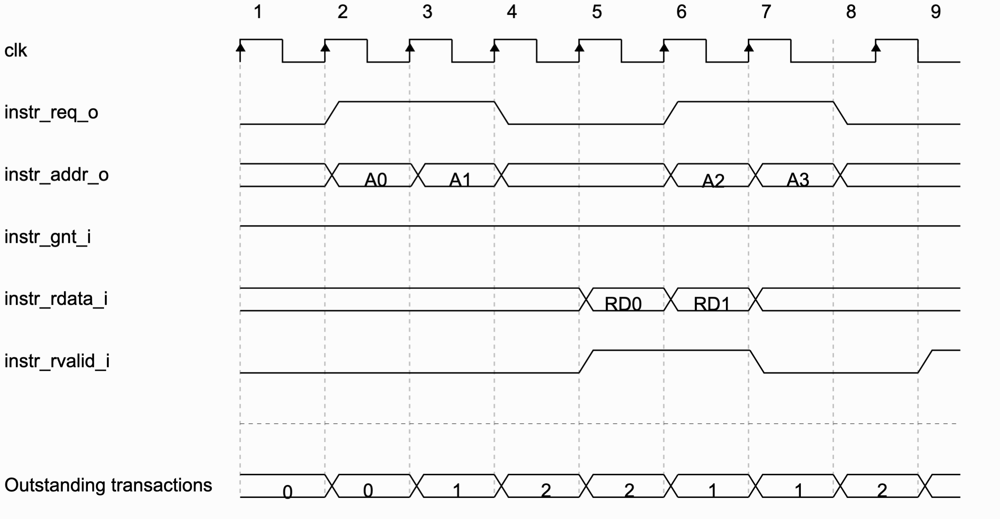
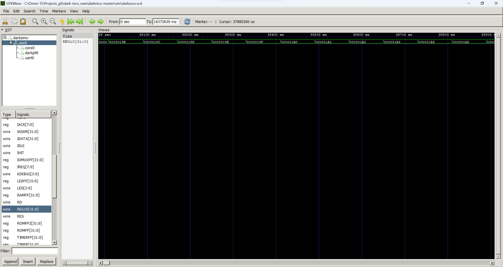
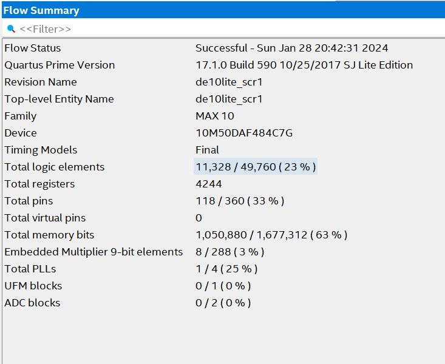

Введение
Что это?
Стоит начать с того, что мы делаем нашу выпускную квалификациюнную работу бакалавриата, в данный момент интересует устройство и проектирование аппаратуры, поэтому выбор темы пал на расширение какого-то ядра RISC-V дополнительным функционалом, в данном случае инструкциями криптографии.
Формальное описание
Реализация криптографического расширения архитектуры RISC-V
Realization of cryptographic extension of RISC-V architecture
RISC-V — перспективная и стремительно развивающаяся процессорная архитектура, доступная для свободного использования. Кроме базового набора инструкций, существует возможность для расширения под специфические задачи. В рамках ВКР надо будет реализовать криптографическое расширение для базовой реализации RISC-V ядра. В процессе выполнения работы студентам потребуется изучить архитектуру RISC-V, базовые криптографические алгоритмы и реализовать дополнительный набор команд для процессорного ядра на языке Verilog, содержащий не менее 20 инструкций. Также нужно будет провести сравнительное тестирование на бенчмарке CoreMark и других собственных бенчмарках.
Команда
- Руководитель: Романов Александр Юрьевич
- Студенты:
- Фролов Кирилл Дмитриевич
- Мирошниченко Лев Игоревич
- Наставники:
- Американов Александр Александрович
- Зунин Владимир Викторович
- Лежнёв Евгений Владимирович
Документация
Авторы: Фролов Кирилл, Мирошниченко Лев
Структура репозитория
В ветке "rv32i" представлена версия ядра schoolRISCV, поддерживающее базовый набор инструкций RV32I, а в ветке "master" представлена версия расширенного ядра schoolRISCV с добавленным криптографическим модулем.
Содержимое репозитория:
- board - папки с заготовленными проектами Quartus для различных плат ПЛИС (название папки соответсвует названию платы);
- doc - документы со спецификацией архитектуры RISCV;
- install - различные инструменты для работы с проектом, которые можно установить;
- materials - результаты моделирования, портирование, ресурсного и временного анализа базового и расширенного ядер schoolRISCV с программами, выполняющими криптографические операции;
- program - папки с разработанными программами, каждая папка называется аналогично содержащейся в ней программе (в каждой папке есть файл main.S или *.asm с текстом программы на языке ассемблер и файл program.hex с программой, представленной в машинном коде);
- в ветке "master" отдельно представлена папка "native_crypto" с программами, использующими криптографические инструкции;
- в ветке "rv32i" отдельно представлена пака "prog_crypto" с программами, выполняющими криптографические операции на базовых инструкциях набора RV32I;
- src - файлы с описанием ядра на языке Verilog;
- submodules - файлы с описанием криптографического модуля;
- testbench - файлы с описанием тестбенчей, разработанных для моделирования работы ядер
Разработка программ
Для разработки программ потребуется использовать ассемблер RARS (rars1_4.jar
находится в директории program/common, для запуска использовать команду java -jar rars1_4.jar).
Интерфейс RARS выглядит следующим образом:

Рассмотрим ассемблирование программы на простом примере, для начала необходимо разработать программу в текстовом редакторе:

Для ассемблирования необходимо нажать кнопку "Assemble the current file":
В результате программа перейдёт в следующее состояние:

Также программу можно просимулировать и отладить непосредственно в RARS, для этого необходимо нажать кнопку "Run" справа от кнопки "Assemble the current file":

Для дампа программы в шеснадцатеричный формат необходимо нажать кнопку "Dump machine code":

И выбрать формат "Hexadecimal Text":

RARS не умеет обрабатывать инструкции криптографического расширения, для их использования нобходимо вставить инструкцию на машинном коде в результирующий файл дампа.
Симуляция ядра
Для симуляции ядра потребуется программа в формате .hex, её получение подробно
описано в разделе Разработка программ.
Создайте отдельную папку для Вашей программы в директории program/ и
скопируйте в неё файл Makefile из любой другой директории в program/. Далее
добавьте в новую директорию прогрумму в формате .hex.
Для старта симуляции перейдите в созданную директорию и введите команду make icarus. Результат будет, примерно, следующий (симуляция описывает процесс для
каждой инструкции):

Синтез ядра
Для произведения синтеза ядра необходимо:
- Предварительно установить приложение Quartus;
- Перейти в папку board, а затем в папку с названием платы ПЛИС, на которую будет производится портирование;
- Переименовать содержащиеся в папке файлы путем удаления символа "_" из расширения файла (Пример:
*.qpf_->*.qpf); - Запустить программу Quatus и в верхнем меню программы нажать кнопку "File" и из выпавшего меню нажать кнопку "Open Project", после чего выбрать файл
*.qpfв папке из пункта 2;
- Убедиться, что все файлы из папки "src" добавлены в проекта, в обратном случае добавить все недостающие файлы путем нажатия кнопки "File" и нажатия кнопки "Open" из выпавшего меню. При выборе файлов в проводнике установить галочку в поле "Add file to current project";
- Выбрать программу, которую необходимо выполнить на ядре из папки "program" и скопировать файл
program.hexв папку с проектом из пункта 2; - Выполнить синтез проекта, нажав кнопку "Start Compilation" в панели инструментов Quartus;
- Дождаться завершения синтеза проекта;
- В окне "Compilation Report" можно ознакомиться с результатами синтеза проекта и с числом использованный ресурсов.
Для получения значения максимальной частоты, на которой способно работать ядро, необходимо:
- Нажать из верхнего меню кнопку "Tools" и из выпавшего меню нажать кнопку "TimeQuest Timing Analyzer";
- В открывшемся окне в нижнем левом меню "Tasks" нажать кнопку "Report Fmax Summary";
- Ознакомиться с максимальной частотой, на которой способно работать ядро.
Для загрузки проекта на плату ПЛИС необходимо:
- Предварительно подключить плату ПЛИС к компьютеру;
- Нажать кнопку "Programmer" в панели инструментов Quartus;
- Нажать кнопку "Hardware Setup" и выбрать устройство для программирования;
- Нажать кнопку "Start".
Описание базового ядра
Схема-описание ядра schoolRISCV, поддерживающего базовый набор инструкций RV32I:
Основные компоненты ядра:
- Instruction Memory - ROM-память, хранящая список испольняемых инструкций, представленных в машинном коде;
- PC (Program Counter) - программный счетчик, указывает на инструкцию, испольняемую на данной итерации;
- Decode - блок, декодирующий значение из Instruction Memory на основе спецификации RV32I;
- Register File - память, хранящая значения регистров;
- A1, A2, A3 - адресные порты;
- RD1, RD2 - порты чтения данных;
- WD3 - порт записи данных;
- WE3 - порт разрешения записи;
- ALU - блок, выполняющий арифметические и логические операции над входными операндами;
- Data Memory - память данных;
- A - адресный порт;
- RD - порт чтения данных;
- WD - порт записи данных;
- WE - порт разрешения записи;
- op_byte, op_half, op_word - порты управления режимами чтения, записи (байт, полуслово, слово);
- Control Unit - управляющий блок, идентифицирует инструкции и в зависимости от исполняемой инструкции изменяет значения управляющих сигналов мультиплексоров, памяти регистров и памяти данных;
- Логика перехода в нижней части схемы - состоит из 2-х мультиплексоров и сумматора, рассчитывает следующее значение Program Counter.
Описание расширенного ядра
Схема-описание расширенного ядра:

Описание изменений:
- Crypto Module - криптографический модуль на которое отправляются вычисления специальных инструкций
- crMode - шина выбора криптографической операции
- crRes - результат выполнения операции
- Control Unit
- pc_hold - управляющий сигнал для программного счётчика, приостонавливающий его работу
Полезные ссылки
Статьи
Криптография
AES
Материалы:
Реализации:
SHA
Материалы:
Реализации:
Обзоры ядер
Мотивация главных героев
Не без чужой помощи1 поняли, что достаточно подробно ядра мы не рассмотрели и сейчас наш выбор основывается на "нам понравилось", будем это исправлять. Цель -- рассмотреть каждый процессор из списка как можно подробнее.
Ядра для обзора
| Название | Репозиторий |
|---|---|
| CV32E40P | https://github.com/openhwgroup/cv32e40p |
| Ibex (formerly Zero-riscy) | https://github.com/lowRISC/ibex |
| CVA6 | https://github.com/openhwgroup/cva6 |
| OPenV/mriscv | https://github.com/onchipuis/mriscv |
| Roa Logic RV12 | https://github.com/roalogic/RV12 |
| SCR1 | https://github.com/syntacore/scr1 |
| Hummingbird E200 | https://github.com/SI-RISCV/e200_opensource |
| PicoRV32 | https://github.com/cliffordwolf/picorv32 |
| SERV | https://github.com/olofk/serv |
| SweRV EH1 | https://github.com/chipsalliance/Cores-SweRV |
| SweRV EL2 | https://github.com/chipsalliance/Cores-SweRV-EL2 |
| SweRV EH2 | https://github.com/chipsalliance/Cores-SweRV-EH2 |
| biRISC-V | https://github.com/ultraembedded/biriscv |
| DarkRISCV | https://github.com/darklife/darkriscv |
| SSRV | https://github.com/risclite/SuperScalar-RISCV-CPU |
| Tinyriscv | https://github.com/liangkangnan/tinyriscv |
| RSD | https://github.com/rsd-devel/rsd |
| Kronos | https://github.com/SonalPinto/kronos |
| Steel | https://github.com/rafaelcalcada/steel-core |
Формат обзоров
Формат будет состоять из положительных и негативных сторон каждого ядра, а также решения и выводов которые мы сделали после его изучения.
Спасибо, Александр Александрович!
CV32E40P
Введение
Уменьшенное (по сравнению с CVA6) 32-битное ядро RISC-V с насыщенным функционалом и документацией, которое продолжает развиваться.
CV32E40P - это софт-процессорное ядро написанное OpenHWGroup на SystemVerilog, обладает 32-битной архитектурой. Общая схема представлена ниже:
Ядро реализует RV32I, а также следующие стандартные расширения:
| Название | Описание |
|---|---|
| C | Расширение для сжатых инструкций |
| M | Расширения для целочисленного деления и умножения |
| Zicntr | Счётчики производительности |
| Zicsr | Инструкции для контроля и регистра статуса |
| Zifencei | Механизм получения инструкций |
Дополнительно могут быть подключены:
| Название | Описание |
|---|---|
| F | Расширение для операций с вещественными числами (одинарной точности) |
| Zfinx | X регистры для расширения F |
Ядро имеет опциональные нестандартные расширения для работы с PULP (Parallel Ultra-Low-Power):
| Название | Описание |
|---|---|
| Xcv | CORE-V PULP ISA |
| Xcvelw | CORE-V PULP Cluster ISA |
Заметки
CV32E40P не является системой на кристале, поэтому не имеет встроенной памяти инструкций и памяти данных, во многом это может быть полезно и удобно, так как процессор не навязывает конкретных реализация и даёт разработчику возможность самостоятельно определить эти блоки.
Такое решение также может быть удобно в случае реализации косимуляции процессора RISC-V, где инструкции будут подаваться на процессор с компьютера, таким образом можно реализовать специфичный Instruction Memory, который будет обращаться к компьютеру по UART и выдвать инструкцию словно сам их хранит.
Instruction Memory - описание
Процессор даёт строгую спецификацию к пямяти инструкций и ожидает от неё заданного поведения, далее будет описано, что мы смогли выяснить и реализовать.
Первое с чего стоит начать, описание входов и выходов, они приведены ниже с указанием разрядности каждого:
instr_addr_o[31:0]instr_req_oinstr_gnt_iinstr_rvalid_iinstr_rdata_i[31:0]
Интересно, что они придерживаются конвенции, где _o на конце обозначает
выходной сигнал, а _i входной, возможно, стоит взять на заметку
instr_addr_o адрес запрашиваемой инструкции, выровнен по машинному слову,
добавить нечего.
instr_req_o сигнал, обозначающий, что запрос всё ещё актуален, остаётся
истинным до тех пор, пока instr_gnt_i не будет истинным хотя бы один такт.
instr_gnt_i обозначает, что принимающая сторона приняла запрос и процессор
может выдать следующий запрос.
instr_rdata_i содержит запрошенные данные...
instr_rvalid_i обозначает, что данные на выходе актуальны, должен оставаться
истинным не более чем на один такт для одного запроса.
Было замечено, что процессор не обязывает отвечать за один такт, это позволяет производить более затратные операции во время запроса инструкций, например, передача или получение данных извне.
Пример временной диаграмы обращения к памяти инструкций:

Также процессор имеет возможность работать с instruction memory по транзакциям, пример такого поведения:

Instruction Memory - реализация
Для загрузки на плату нам потребуется реализовать память инструкций самостоятельно, поэтому сделаем простейшую реализацию, которая будет выполнять требования интерфейса, пример приведён ниже.
module inst_mem (
input clk,
input [31:0] addr,
input req_valid,
output accepted,
output reg rvalid,
output reg [31:0] rdata
);
reg [31:0] mem [255:0];
assign accepted = 1'b1;
always @(posedge clk) begin
if (req_valid) begin
rdata = mem[31:2];
rvalid = 1'b1;
end else begin
rvalid = 1'b0;
end
end
endmodule
Загрузка на плату
Для загрузки на плату всё готово, создаём пустой проект для de1-soc через утилиту system_cd, добавляем все необходимые файлы, создаём модуль процессора и памяти в верхнеуровневом файле и соединяем нужные входы и выходы, запускаем процесс синтеза... получаем ошибку...
При выяснении причин ошибок отправляемся в файл
cv32e40p_register_file_latch.sv и видим следующее:
...
if (FPU == 1 && ZFINX == 0) begin
// Floating point registers
always_latch begin : latch_wdata_fp
if (FPU == 1) begin
for (l = 0; l < NUM_FP_WORDS; l++) begin : w_WordIter
if (~rst_n) mem_fp[l] = '0;
else if (mem_clocks[l+NUM_WORDS] == 1'b1)
mem_fp[l] = waddr_onehot_b_q[l+NUM_WORDS] ? wdata_b_q : wdata_a_q;
end
end
end
end
endmodule
FPU и ZFINX являются задаваемыми параметрами, замысел конструкции понятен,
но он, вроде как, нарушает синтаксис verilog, который позволяет использовать
if только внутри цикла always.
Исправлять ошибки (ошибки ли это? может так и задумано) мы посчитали странным, так как не до конца ясна микроархитектура процессора и замысел этих конструкций, поэтому исследование этого процессора отложено на время, пока не будет выяснено, что это значит и почему так было сделано.
DarkRISCV
Реализован с нуля за одну ночь
- GitHub
- Отдельной документации нет
Обзор
DarkRISCV - Софт-процессор, написанный на Verilog, реализующий RV32I и RV32E. В относительности небольших размеров код позволяет с меньшими трудностями разобраться в ядре и модифицировать его. FPGA Proven, загружался на ПЛИС от xilinx и некоторые от Altera (но, к сожалению, не на наши).
Некоторые возможности ядра:
- Нормально работает с GCC
- Поддержка UART
- Контроллер прерываний
- Контроллер кэшэй
- GPIO и таймер
- Предсказатель ветвления
CVA6
CVA6 - 64-разрядное ядро с 6-ступенчатым конвейером (Рис. 1). В данном процессоре реализованы 3 уровня привилегий M, S, U для полной поддержки Unix-подобных операционных систем. По данной причине основным назначением процессора является запуск полноценной операционной системы. Отличительной особенностью данной реализации является наличие 6 стадий конвейера в отличие от классического конвейера с 5 стадиями.

Еще одной особенностью является наличие PC Generation, который отвечает за вычисление адреса следующей инструкции, а также за учёт ветвлений в данном процессе. Он имеет специальные блоки BHT (Branch History Table), содержащий историю “прыжков” PC, и BTB (Branch Target Buffer), который является буфером ветвления. Также PC Generation на основе истории ветвлений направлен на прогнозирование будущих ветвлений (Рис. 2).

Также есть возможность декодировать сокращенные команды, которые занимают 16 бит, а не 32, как в классическом варианте.
Есть возможность работы с CSR инструкцией, при этом для работы с ней создан отдельный буфер, так как инструкция CSR изменяет состояние архитектуры.
Кроме этого есть в данном процессоре есть возможность работы с CSR-инструкцией. Для этого создан отдельный буфер ввиду того, что инструкция CSR изменяет состояние архитектуры.
PicoRV32
Это ядро мы уже кратко обозревали в одном из предыдущих отчётов, здесь постараемся сделать более подробно.
Описание
PicoRV32 - ядро разработанное YosysHQ (те же ребята, что делают парсер verilog'а для OpenLane), может реализовывать архитектуры RV32E, RV32I, RV32IC, RV32IM или RV32IMC.
Основные особенности:
- Компактное (750-2000 LUT на Xilinx)1
- Высокое значение максимальной частоты (250-400 МГц)
- Опциональное IRQ2
~6000 на Cyclone
Не соответствует RISC-V ISA
Некоторые особенности
В процессе изучения ядра было выявлены следующие особенности:
- Всё ядро реализованно в одном Verilog файле (что, возможно, не очень хорошо)
- Вся документация в readme
- Хорошо задокументированы параметры модулей, собственная реализация IRQ
- Остальное задокументировано плохо (вводы/выводы модулей, внутренее устройство)
Программирование
Тут такое дело, что для запуска программ шифромания/дешифрование их нужно для начала сделать... Тут есть два пути, как добиться желаемого:
- Написать на ассемблере
- Написать на C
Ассемблер
Pros
- Это, скорее всего, заработает с меньшими затратами
- Больший контроль над используемыми инструкциями
Cons
- Объёем работы для реализации большой
- Труднее читать
- Труднее отлаживать
Decision
Очень не хотелось бы идти по этому пути, желательно добиться работы через язык программирования. В остальном, прибегать к ассемблеру только в отчаяном положении, когда модифицировать компилятор и заставить работать программу совсем не выходит.
C
Pros
- Более высокоуровневая абстракция
- Проще разрабатывать и читать
- Больше возможностей для использования готовых компонентов
Cons
- Нужно модифицировать компилятор 🥶
- Могут возникнуть трудности при использовании инструкций из расширений
Введение
Здесь будет рассматриваться варианты написать нужные программы на высокоуровневом языке (C), в том числе:
- Использование inline assembly
- Модификация компилятора
- Опыт других людей
Ассемблерные вставки
Изучая и обдумывая работу с микроконтроллерами мне пришла идея (вернее, я согласился с идеей, прочитанной на стаке ранее, которую отвер изначально), что, возможно, модификация компилятора не самый удачный подход к задаче, ведь мы можем использовать inline assebmly, чтобы вызвать наши новые инструкции и инкапсулировать взаимодействие с ними в библиотеку.
То есть нам даже не нужно добавлять название в набор инструкций компилятора, мы можем просто вставлять какое-то (составленные самостоятельно) машинное слово и исполнить его как инструкцию.
Пример:
int main() {
asm __volatile__ (".byte 0x90\n");
return 0;
}
Плюсы
- Быстрота реализации
- Возможность быстро проверить работоспособность
- Гарантии того, что инструкции точно будут задействованы
Минусы
- Нужно будет написать библиотеку работы с новыми инструкциями
- Нужно явно реализовать алгоритм шифрования с написанными функциями
Решение
Скорее всего реализовать сначала простой вариант - хорошая идей, можно убедиться в работоспособности всего махенизма, далее, убедившись в работе простого подхода, можно реализовать сложный с модификацией компилятора.
Модификация компилятора (Под вопросом)
Список компиляторов
На данный момент я нашёл следующий компиляторы C, которые мы можем использовать в нашей работе:
- GCC
- LLVM
- TinyCC
Полезные ссылки
Проекты и документация по работе с внутренней частью компилятора:
Введение
В этом разделе будет рассматриваться материалы по реализации косимуляции и обмена данными компьютера с ПЛИС в процессе работы.
Самым перспективным подходом является использование передачи данных по UART.
Полезные ссылки:
Отчёт от 30.10.2023
О чём?
Рассмотрели список ядер по ссылке https://github.com/riscvarchive/riscv-cores-list/blob/master/README.md. Выбрали несколько ядер для первоочередного рассмотрения.
Критерии отбора:
- Открытая лицензия
- Язык: Verilog или System Verilog
Результаты
Первым делом отфильтровали весь список по требованиям, представленным выше, получили список из 19 ядер, удовлетворяющих этим требованиям:
| Название | Репозиторий |
|---|---|
| CV32E40P | https://github.com/openhwgroup/cv32e40p |
| Ibex (formerly Zero-riscy) | https://github.com/lowRISC/ibex |
| CVA6 | https://github.com/openhwgroup/cva6 |
| OPenV/mriscv | https://github.com/onchipuis/mriscv |
| Roa Logic RV12 | https://github.com/roalogic/RV12 |
| SCR1 | https://github.com/syntacore/scr1 |
| Hummingbird E200 | https://github.com/SI-RISCV/e200_opensource |
| PicoRV32 | https://github.com/cliffordwolf/picorv32 |
| SERV | https://github.com/olofk/serv |
| SweRV EH1 | https://github.com/chipsalliance/Cores-SweRV |
| SweRV EL2 | https://github.com/chipsalliance/Cores-SweRV-EL2 |
| SweRV EH2 | https://github.com/chipsalliance/Cores-SweRV-EH2 |
| biRISC-V | https://github.com/ultraembedded/biriscv |
| DarkRISCV | https://github.com/darklife/darkriscv |
| SSRV | https://github.com/risclite/SuperScalar-RISCV-CPU |
| Tinyriscv | https://github.com/liangkangnan/tinyriscv |
| RSD | https://github.com/rsd-devel/rsd |
| Kronos | https://github.com/SonalPinto/kronos |
| Steel | https://github.com/rafaelcalcada/steel-core |
Заинтересовавшие ядра
- SCR1
- CVA6
- PicoRV32
Что дальше?
Выберем три ядра и копнём глубже в их документацию, постараемся ознакомится с микроархитектурой и устройством каждого из них, а также оценим их функциональные возможности.
CVA6 - первое мнение

CVA6 - процессорное ядро risc-v с 6-ступенчатым конвейером, имеет отдельный сайт с документацией по использованию и устройству (https://docs.openhwgroup.org/projects/cva6-user-manual/), для каждой стадии есть отдельный блок документации, в целом, перые впечатления приятные, документация выглядит досаточно подробной, а репозиторий имеет неплохую активность.
SCR1 - первое мнение


Документация (https://github.com/syntacore/scr1/tree/master/docs) не выглядит дружелюбной на первый взгляд, но углубившись лучше можно заметить, что отдельный блоки описаны достаточно подробно, в том числе имеются временные диаграммы.
PicoRV32 - первое мнение

Изначально подавал большие надежды, но документация оставляет желать лучшего, кроме README других заметок по архитектуре нет, но возможно мы ошибаемся и ещё не нашли то, что нужно. Также следует отметить, что репозиторий не обновляется уже как 2 года. Из интересного: всё описание ядра содержится в одном verilog файле, несмотря на описанные выше недостатки, ознакомиться стоит.
CVA6 - углубление
Особенностью данной реализации является наличие 6-ти стадий конвейера, в отличие от классического конвейера с 5-ю стадиями.
PC Generation отвечает за вычисление адреса следующей инструкции, а также учёт ветвлений в данном процессе. Имеет специальные блоки BHT (Branch History Table), содержащий историю “прыжков” PC, и BTB (Branch Target Buffer) буфер ветвления. Также PC Gen на основе истории ветвлений пытается предсказывать грядущие ветвления.

Также есть возможность декодировать сокращенные команды, которые занимают 16 бит, а не 32, как в классическом варианте.
Есть возможность работы с CSR инструкцией, при этом для работы с ней создан отдельный буфер, так как инструкция CSR изменяет состояние архитектуры.
Обзор микроархитектуры проводился на основе приложенной документации https://docs.openhwgroup.org/projects/cva6-user-manual/03_cva6_design/intro.html
Отчёт от 13.11.2023
О чём?
Углубляемся в устройство процессоров перечисленных в прошлом отчёте, ищем полезные для нас наработки на opencores.
Результаты
PicoRV32 - углубление
Сразу стоит отметить, что данное ядро является достаточно универсальным, так как имеет много инструментов конфигурации под определенные задачи и требования. Есть возможность отключения некоторого функционала для уменьшения размера ядра или наоборот подключения для получения максимальной производительности.
PicoRV32 может быть сконфигурирован как ядро RV32E, RV32I, RV32IC, RV32IM или RV32IMC и, при необходимости, содержит встроенный контроллер прерываний.
Этот процессор предназначен для использования в качестве вспомогательного процессора в конструкциях FPGA и ASIC. Благодаря высокой максимальной частоте он может быть интегрирован в большинство существующих конструкций без пересечения тактовых частот. При работе на более низкой частоте он будет иметь значительный временной провал и, таким образом, может быть добавлен в конструкцию без ущерба для синхронизации.
Из особенностей можно выделить следующее:
- Небольшой (750-2000 LUT в архитектуре Xilinx 7-й серии)
- Высокая максимальная частота (250-450 МГц на ПЛИС Xilinx 7-й серии)
- Выбираемый интерфейс встроенной памяти или AXI4-Lite master
- Дополнительная поддержка IRQ (с использованием простого пользовательского ISA)
- Дополнительный интерфейс сопроцессора
Из интересных возможностей конфигурации можно выбирать между двухпортовой и однопортовой реализацией регистрового файла. Первая обеспечивает лучшую производительность, в то время как вторая приводит к уменьшению ядра.
Из сомнительных моментов можно выделить то, что функции обработки IRQ в PicoRV32 не соответствуют спецификации привилегированного ISA RISC-V. Вместо этого используется небольшой набор очень простых пользовательских инструкций для реализации обработки IRQ с минимальными затратами на оборудование.
Обзор архитектуры приводился на основе описания репозитория: https://github.com/YosysHQ/picorv32
Алгоритмы шифрования
AES
С этим алгоритмом никаких подводных камней, есть лишь одна реализация –
Rijndael, которую мы и будем изучать. Также смогли найти подходящие для нас
реализации на Verilog и С, которые будем заимствовать на которые можем
опираться.
Полезные ссылки:
- https://en.wikipedia.org/wiki/Advanced_Encryption_Standard
- https://opencores.org/projects/tiny_aes
- https://github.com/kokke/tiny-AES-c
SHA
Тут уже не так всё ясно, у него есть несколько реализаций – SHA-2 (разработан в АНБ, наиболее распространён) и SHA-3 (он же Keccak, разработан не в АНБ) Нужно отметить, что сертифицированная реализация SHA на verilog это SHA-3, но спецификация RISC-V Crypto требует SHA-2… ладно :(
Поэтому ищем ресурсы по SHA-2:
Tiny AES - обзор
Одна из самых популярных реализаций алгоритма AES на Verilog, которая сертифицирована opencores (https://opencores.org/projects/tiny_aes). Структура проекта достаточно проста для понимания, интересующий нас реализация находится в разделе trunk/rtl, основными смысловыми блоками являются раунды шифрования/дешифрования и расширения ключей, в дальнейшем эти блоки используются в модулях, реализующих сам алгоритм.
Отчёт от 20.11.2023
О чём?
Углбление в процессор CVA6 и обзор перспективного для нас процессора CV32E40P.
Результат
После изучения CVA6 рассмотрели и его младшую редакцию – CV32E40P (https://github.com/openhwgroup/cv32e40p), обладает упрощённой микроархитектурой, что в нашем случае может быть более удобным вариантом.
Также стоит отметь, что этот процессор не имеет встроенного instruction memory, что также может быть полезно, если мы решим идти по пути косимуляции.
CV32E40P

CV32E40P (далее обозначается как Ешка) -- четырехстадийное 32-битное ядро RISC-V и так далее (копоровать описание не стану), самое важное, что сразу бросается в глаза: простота процессора и внешние интерфейсы.
Насчёт простоты, его микроархитектура очень похожа на schoolMIPS и уже по
диаграмме примерно ясны все основные блоки. Это большой плюс, так как мы ещё
новички меньше времени потребуется на вникание в структуру, а также будет
проще модифицировать. Ценой за эти удобства будет уменьшенный функционал, но,
возможно, нам будет достаточно и его.
Также стоит затронуть интерфейсы, у процессора, по всей видимости, нет блока instruction memory, что может показаться недостатком, но это же мы можем использовать и для своих нужд, если решим реализовать косимуляцию, то будет проще создать отдельный модуль пямяти инструкций, который будет тягать эти инструкции по UART.
Формат отчётов
Открыли для себя новый инструмент -- mdbook, в котором продолжим вести наши отчёты и накопленную вести базу знаний, удобный вещь, хочу сказать.
Также с началом работы здесь заметил, что не очень удобно хранить основную информацию в отчётах, так как поиск и структурирование вызывают затруднение, что создаст много проблем в дальнейшем при обращении к этой информации, поэтому в дальнейшем работа будет направлена на расширение раздела "Материалы", а в отчётах будут ссылки на новые и расширенные параграфы.
Отчёт от 27.11.2023
Результаты
Читали в основном про программные средства полезные для нашей работы.
Рассмотрели (в ссылках подробности работы):
- Inline assembly, как средство программирования с новыми инструкциями
- Полезные статьи по устройству UART и способам работы с COM портами из программы
Misc
Лев на этой неделе заболел...
Кирилл тоже заболел в начале следующей...

Отчёт от 11.12.2023
Введение
На этой неделе мы сделали более подробный обзор нескольких процессоров и постарались портировать один из них на DE1-SoC.
Результаты
Отчёт от 08.01.2024
О чем?
Углубление в процессор PicoRV32, создание пробного проекта с данным процессором в Quartus.
Результаты
Начали с клонирования репозитория с файлами процессора. Далее создали проект picorv32 (пока без привязки к плате, так как еще полноценно не разобрались в интерфейсах процессора, поэтому в разделе device выбрали случайную плату).
Добавили в проект следующую модули:
- picorv32.v (файл, в котором реализован сам процессор PicoRV32)
- picosoc.v (верхнеуровневый файл системы на кристалле)
- spimemio.v (файл модуля флеш памяти с интерфейсом SPI)
- simpleuart.v (файл модуля для работы с UART)
Далее выставили верхнеуровневый файл picosoc.v и запустили компиляцию проекта. В итоге получили следующую ошибку:
Нашли место, в котором происходит ошибка.

В результате данный проект требует определенный порядок компиляции файлов, но так как в Quartus мы задаем Top-Level Entity, то порядок компиляции определяется автоматически. Поэтому мы комментируем данную ошибку, повторяем компиляцию и получаем успешно скомпилированный проект.

В итоге получаем:
- почти 6000 LUT, однако в документации заявлено 750-2000 LUT, но в архитектуре Xilinx 7й серии
- 9783 регистров
- 2048 бит памяти
Прочее
Нашли интересную статью по смежному направлению, где реализовывали криптографический SoC (на основе PicoRV32) https://www.researchgate.net/publication/361843646_Design_of_an_Integrated_Cryptographic_SoC_Architecture_for_Resource-Constrained_Devices
Всех С Новым Годом!
Отчёт от 28.01.2024
Результаты
- Успешная симуляция работы программы на DarkRISCV
- Успешный синтез SCR1 через подготовленный sdk
- Пообщались с ребятами из Digital Design Community
DarkRISCV
В прошлый раз у нас получилось синтезировать ядро и загрузить его на плату, но мы не могли проверить его работоспособность, поэтому на этой неделе мы решили написать программу-счетчик (3 строки на ассемблере) и загрузить её вместо заготовленной программы-загрузчика.
Подготовка к загрузке
Для начала был добавлен вывод регистра x10 на семисегментные дисплей, был взят модуль конвертации двоичного значения в формат семисегментного дисплея и пременён для вывода, также был написан простой делитель тактов для уменьшения частоты до наблюдаемого уровня.
Подключение выводов схемы к darkriscv:
wire clk;
wire [31:0] REG10;
clk_devider devider (
CLOCK_50,
clk,
);
darksocv soc (
.XCLK ( clk ),
.XRES ( GPIO_0[14] ),
.UART_RXD (),
.UART_TXD (),
.LED (),
.DEBUG (),
.REG10 ( REG10 )
);
assign LEDR [9:0] = REG10 [9:0];
sm_hex_display hex0 (REG10[3:0], HEX0);
sm_hex_display hex1 (REG10[7:4], HEX1);
sm_hex_display hex2 (REG10[11:8], HEX2);
sm_hex_display hex3 (REG10[15:12], HEX3);
sm_hex_display hex4 (REG10[19:16], HEX4);
sm_hex_display hex5 (REG10[24:20], HEX5);
Модуль для деления тактов:
module clk_devider #(
parameter dev = 20
)(
input clkIn,
output clkOut
);
reg [31:0] cnt;
always @(posedge clkIn)
cnt = cnt + 1'b1;
assign clkOut = cnt[dev];
endmodule
Модуль для конвертации:
module sm_hex_display
(
input [3:0] digit,
output reg [6:0] seven_segments
);
always @*
case (digit)
'h0: seven_segments = 'b1000000; // g f e d c b a
'h1: seven_segments = 'b1111001;
'h2: seven_segments = 'b0100100; // --a--
'h3: seven_segments = 'b0110000; // | |
'h4: seven_segments = 'b0011001; // f b
'h5: seven_segments = 'b0010010; // | |
'h6: seven_segments = 'b0000010; // --g--
'h7: seven_segments = 'b1111000; // | |
'h8: seven_segments = 'b0000000; // e c
'h9: seven_segments = 'b0011000; // | |
'ha: seven_segments = 'b0001000; // --d--
'hb: seven_segments = 'b0000011;
'hc: seven_segments = 'b1000110;
'hd: seven_segments = 'b0100001;
'he: seven_segments = 'b0000110;
'hf: seven_segments = 'b0001110;
endcase
endmodule
Программа счётчик:
.text
add a0, zero, zero
loop: addi a0, a0, 1
j loop
Симуляция проекта
Для симуляции нужно скомпилировать файлы проекта с помощью Icarus Verilog и запустить выходной файл.

Для рассмотрения вейвформ нужно выданный в результате симуляции vdc файл передать в gtkwave.

Загрузка на плату
После успешной симуляции произвели загрузку проекта на плату, но к сожалению ни на семисегментном дисплее, ни на диодах результат работы счетчика не появился.

SCR1
Постарались начать продвижение в изучении ядра SCR1 и обратили на него ПРИСТАЛЬНОЕ ВНИМАНИЕ.
В репозитории scr1 есть ссылка на SDK для загрузки на fpga с заготовленными программами, в числе подготовленных к загрузке fpga есть и de10-lite, который имеется у нас в лаборатории, так что всё хорошо. Может быть есть смысл портировать на De1-SoC.
Был клонирован репозиторий с SDK и была произведена попытка синтеза ядра: 
Социализация
Задали интерезующие нас вопросы в Digital Design Community, в частности о SCR1 и общем подходе к изучению новых ядер.
На наш вопрос дал развёрнутый ответ Виктор Дашонок, специалист по развитию образовательных программ YADRO, от него получили следующее:
- Ссылку на SCR1 SDK
- Ссылку на задачник по программированию
- Ссылку на список ядер от risc-v (Но не все ядра там свободные)
- Предложение предоставить Early Access Kit
- Обещание связать с кем-то из специалистов
Также получили отческий совет от Юрия Панчула об общем подходе к изучению новых ядер.
Благодарны за полученные ответы.
Отчёт от 01.04.2024
О чём?
Результаты
Разобраться с промышленными ядрами оказалось задачей неподъёмной для нас, поэтому было принято решение начать с простого и взять schoolRISCV.
Его плюсы:
- Он достаточно прост
- Его микроархитектура и устройство полностью ясны
Минусы:
- Не реализует RV32I
Поставлена задача довести schoolRISCV до RV32I, на данный момент момент реализованы 29 инструкций и осталось реализовать ещё 8 (ecall и ebreak, скорее всего, будут пропущены).
Некоторые фрагменты реализации:
// sr_ram.v
module sr_ram #(
parameter DEPTH = 256
) (
input clk,
input [31:0] data_addr,
input [31:0] write_data,
input we,
input sign,
input op_word, op_half, op_byte,
output reg [31:0] read_data
);
reg [7:0] mem [DEPTH-1:0];
always @(posedge clk) begin
if (we) begin
case ({op_word, op_half, op_byte})
3'b001: begin
mem[data_addr] = write_data[ 7: 0];
end
3'b010: begin
mem[data_addr] = write_data[ 7: 0];
mem[data_addr+1] = write_data[15: 8];
end
3'b100: begin
mem[data_addr] = write_data[ 7: 0];
mem[data_addr+1] = write_data[15: 8];
mem[data_addr+2] = write_data[23:16];
mem[data_addr+3] = write_data[31:24];
end
default: read_data = '0;
endcase
end
end
always @(*) begin
case ({op_word, op_half, op_byte})
3'b001: begin
read_data = {
{ 24 { sign ? mem[data_addr][7] : 1'b0 } },
mem[data_addr]
};
end
3'b010: begin
read_data = {
{ 16 { sign ? mem[data_addr+1][7] : 1'b0 } },
mem[data_addr+1],
mem[data_addr]
};
end
3'b100: begin
read_data = {
mem[data_addr+3],
mem[data_addr+2],
mem[data_addr+1],
mem[data_addr]
};
end
default: read_data = 0;
endcase
end
endmodule
// sr_control.v
module sr_control
(
input [ 6:0] cmdOp,
input [ 2:0] cmdF3,
input [ 6:0] cmdF7,
input aluZero,
output pcSrc, // pcBranch : pcPlus4
output reg regWrite, // rf write enable
output reg aluSrc, // immediate : rd2
output reg wdSrc, // immU : execResult
output reg immPick, // immS : immI
output reg memToReg, // dmDataR : aluResult
output reg dmWe, // data memory write enable
output reg dmSign, // data memory signed read
output reg [3:0] aluControl,
output dmOpByte, // data memory operation mode
output dmOpHalf,
output dmOpWord
);
reg branch;
reg condZero;
reg [2:0] dmOpMode;
assign {dmOpWord, dmOpHalf, dmOpByte} = dmOpMode;
assign pcSrc = branch & (aluZero == condZero);
always @ (*) begin
branch = 1'b0;
condZero = 1'b0;
regWrite = 1'b0;
aluSrc = 1'b0;
wdSrc = 1'b0;
immPick = 1'b0;
memToReg = 1'b0;
dmWe = 1'b0;
dmSign = 1'b0;
aluControl = `ALU_ADD;
dmOpMode = `DM_WORD;
casez( { cmdF7, cmdF3, cmdOp } )
default: aluControl = `ALU_ADD;
{ `RVF7_ADD, `RVF3_ADD, `RVOP_ADD } : begin
regWrite = 1'b1;
aluControl = `ALU_ADD;
end
{ `RVF7_OR, `RVF3_OR, `RVOP_OR } : begin
regWrite = 1'b1;
aluControl = `ALU_OR;
end
{ `RVF7_SRL, `RVF3_SRL, `RVOP_SRL } : begin
regWrite = 1'b1;
aluControl = `ALU_SRL;
end
{ `RVF7_SLTU, `RVF3_SLTU, `RVOP_SLTU } : begin
regWrite = 1'b1;
aluControl = `ALU_SLTU;
end
{ `RVF7_SUB, `RVF3_SUB, `RVOP_SUB } : begin
regWrite = 1'b1;
aluControl = `ALU_SUB;
end
{ `RVF7_XOR, `RVF3_XOR, `RVOP_XOR } : begin
regWrite = 1'b1;
aluControl = `ALU_XOR;
end
{ `RVF7_AND, `RVF3_AND, `RVOP_AND } : begin
regWrite = 1'b1;
aluControl = `ALU_AND;
end
{ `RVF7_SLL, `RVF3_SLL, `RVOP_SLL } : begin
regWrite = 1'b1;
aluControl = `ALU_SLL;
end
{ `RVF7_SRA, `RVF3_SRA, `RVOP_SRA } : begin
regWrite = 1'b1;
aluControl = `ALU_SRA;
end
{ `RVF7_SLT, `RVF3_SLT, `RVOP_SLT } : begin
regWrite = 1'b1;
aluControl = `ALU_SLT;
end
{ `RVF7_ANY, `RVF3_ADDI, `RVOP_ADDI } : begin
regWrite = 1'b1;
aluSrc = 1'b1;
aluControl = `ALU_ADD;
end
{ `RVF7_ANY, `RVF3_XORI, `RVOP_XORI } : begin
regWrite = 1'b1;
aluSrc = 1'b1;
aluControl = `ALU_XOR;
end
{ `RVF7_ANY, `RVF3_ORI, `RVOP_ORI } : begin
regWrite = 1'b1;
aluSrc = 1'b1;
aluControl = `ALU_OR;
end
{ `RVF7_ANY, `RVF3_ANDI, `RVOP_ANDI } : begin
regWrite = 1'b1;
aluSrc = 1'b1;
aluControl = `ALU_AND;
end
{ `RVF7_ANY, `RVF3_SLLI, `RVOP_SLLI } : begin
regWrite = 1'b1;
aluSrc = 1'b1;
aluControl = `ALU_SLL;
end
{ `RVF7_SLLI, `RVF3_SLLI, `RVOP_SLLI } : begin
regWrite = 1'b1;
aluSrc = 1'b1;
aluControl = `ALU_SLL;
end
{ `RVF7_SRLI, `RVF3_SRLI, `RVOP_SRLI } : begin
regWrite = 1'b1;
aluSrc = 1'b1;
aluControl = `ALU_SRL;
end
{ `RVF7_SRAI, `RVF3_SRAI, `RVOP_SRAI } : begin
regWrite = 1'b1;
aluSrc = 1'b1;
aluControl = `ALU_SRA;
end
{ `RVF7_ANY, `RVF3_SLTI, `RVOP_SLTI } : begin
regWrite = 1'b1;
aluSrc = 1'b1;
aluControl = `ALU_SLT;
end
{ `RVF7_ANY, `RVF3_SLTIU,`RVOP_SLTIU } : begin
regWrite = 1'b1;
aluSrc = 1'b1;
aluControl = `ALU_SLTU;
end
{ `RVF7_ANY, `RVF3_ANY, `RVOP_LUI } : begin
regWrite = 1'b1;
wdSrc = 1'b1;
end
{ `RVF7_ANY, `RVF3_BEQ, `RVOP_BEQ } : begin
branch = 1'b1;
condZero = 1'b1;
aluControl = `ALU_SUB;
end
{ `RVF7_ANY, `RVF3_BNE, `RVOP_BNE } : begin
branch = 1'b1;
aluControl = `ALU_SUB;
end
// load / store instructions
{ `RVF7_ANY, `RVF3_LB, `RVOP_LOAD } : begin
memToReg = 1'b1;
regWrite = 1'b1;
aluSrc = 1'b1;
dmOpMode = `DM_BYTE;
dmSign = 1'b1;
end
{ `RVF7_ANY, `RVF3_LH, `RVOP_LOAD } : begin
memToReg = 1'b1;
regWrite = 1'b1;
aluSrc = 1'b1;
dmOpMode = `DM_HALF;
dmSign = 1'b1;
end
{ `RVF7_ANY, `RVF3_LW, `RVOP_LOAD } : begin
memToReg = 1'b1;
regWrite = 1'b1;
aluSrc = 1'b1;
dmOpMode = `DM_WORD;
dmSign = 1'b1;
end
{ `RVF7_ANY, `RVF3_LBU, `RVOP_LOAD } : begin
memToReg = 1'b1;
regWrite = 1'b1;
aluSrc = 1'b1;
dmOpMode = `DM_BYTE;
end
{ `RVF7_ANY, `RVF3_LHU, `RVOP_LOAD } : begin
memToReg = 1'b1;
regWrite = 1'b1;
aluSrc = 1'b1;
dmOpMode = `DM_HALF;
end
{ `RVF7_ANY, `RVF3_SB, `RVOP_STORE } : begin
dmWe = 1'b1;
immPick = 1'b1;
aluSrc = 1'b1;
dmOpMode = `DM_BYTE;
end
{ `RVF7_ANY, `RVF3_SH, `RVOP_STORE } : begin
dmWe = 1'b1;
immPick = 1'b1;
aluSrc = 1'b1;
dmOpMode = `DM_HALF;
end
{ `RVF7_ANY, `RVF3_SW, `RVOP_STORE } : begin
dmWe = 1'b1;
immPick = 1'b1;
aluSrc = 1'b1;
dmOpMode = `DM_WORD;
end
endcase
end
endmodule